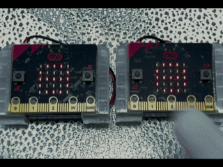
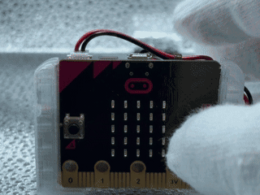
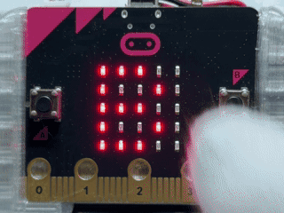
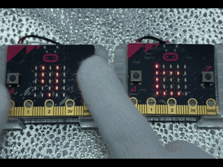
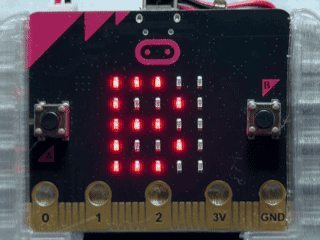
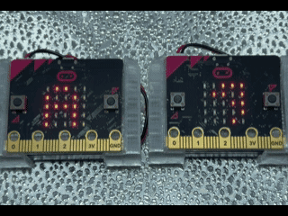

目で見て分かるむせんドアチャイム 目で見て分かる無線ドアチャイム
このプログラムでは、micro:bitを使って、2台をそうしんきとじゅしんきにせっていし、むせんでドアチャイムを鳴らすことができます。そうしんきのボタンをおすと、じゅしんきから音が鳴り、LEDが4回てんめつします。そうしんきとじゅしんきを同じプログラムで使えることがとくちょうです。 このプログラムでは、micro:bitを使って、2台を送信機と受信機に設定し、無線でドアチャイムを鳴らすことができます。送信機のボタンを押すと、受信機から音が鳴り、LEDが4回点滅します。送信機と受信機を同じプログラムで使えることが特徴です。
使い方
- 起動すると、そうしんきを表すボタンのドット絵がひょうじされる 起動すると、送信機を表すボタンのドット絵が表示される
- Aボタンをおすと、そうしんきのボタンとじゅしんきの光のドット絵が切りかわる Aボタンを押すと、送信機のボタンと受信機の光のドット絵が切り替わる
- 1台目はそうしんきをえらび、Bボタンで決定する 1台目は送信機を選び、Bボタンで決定する
- 2台目はじゅしんきをえらび、Bボタンで決定する 2台目は受信機を選び、Bボタンで決定する
- 決定するとチェックマークがひょうじされ、そのあとドット絵が白黒反転し、えらんだモードになったことがわかる 決定するとチェックマークが表示され、そのあとドット絵が白黒反転し、選んだモードになったことがわかる
- そうしんきのBボタンをおすと、むせんでしんごうが送られ、えがおのマークがいっしゅんひょうじされる 送信機のBボタンを押すと、無線で信号が送られ、笑顔のマークが一瞬表示される
- じゅしんきがしんごうを受け取ると、メロディーが鳴り、LEDが4回てんめつする 受信機が信号を受け取ると、メロディーが鳴り、LEDが4回点滅する
- 動作が終わると、それぞれのモードを表す反転したドット絵にもどる 動作が終わると、それぞれのモードを表す反転したドット絵に戻る
- A＋Bボタンを同時におすと、さいしょのせんたく画面にもどり、そうしんきとじゅしんきをえらび直せる A＋Bボタンを同時に押すと、最初の選択画面に戻り、送信機と受信機を選び直せる

ねらい
- むせんつうしんを使って、はなれたmicro:bitどうしでじょうほうをやり取りするたいけん 無線通信を使って、離れたmicro:bit同士で情報をやり取りする体験
- そうしんきとじゅしんきのやくわりのちがいをりかいする学習 送信機と受信機の役割の違いを理解する学習
- ボタンそうさやLEDひょうじを組み合わせたプログラミングのたいけん ボタン操作やLED表示を組み合わせたプログラミングの体験
- 同じプログラムでも、せんたくしたモードによって動作がかわる仕組みのりかい 同じプログラムでも、選択したモードによって動作が変わる仕組みの理解
チャレンジ
- むせんがとどくきょりを調べて、どこまではなれて使えるかじっけん 無線が届く距離を調べて、どこまで離れて使えるか実験
- じゅしんしたときのメロディーやLEDのてんめつ回数をへんこう 受信したときのメロディーやLEDの点滅回数を変更
- そうしんきをふやして、ふくすうの場所から呼び出せる仕組み作り 送信機を増やして、複数の場所から呼び出せる仕組み作り
- そうしんきとじゅしんきのドット絵をオリジナルのデザインにへんこう 送信機と受信機のドット絵をオリジナルのデザインに変更
ふってぎゃくてん！25秒LEDすな時計 振って逆転！25秒LED砂時計
このプログラムでは、micro:bitのかそくどセンサーを使って、25このLEDが1秒ごとにふえていくすな時計を作ります。micro:bitをふるたびにLEDがふえる方向とへる方向を切りかえ、時間の流れを自由にかえることができます。 このプログラムでは、micro:bitの加速度センサーを使って、25個のLEDが1秒ごとに増えていく砂時計を作ります。micro:bitを振るたびにLEDが増える方向と減る方向を切り替え、時間の流れを自由に変えることができます。
使い方
- さいしょに「B」と「→」がこうごにひょうじされる 最初に「B」と「→」が交互に表示される
- Bボタンをおすと、すな時計がスタートする Bボタンを押すと、砂時計がスタートする
- 1秒ごとにLEDが1こずつてんとうする 1秒ごとにLEDが1個ずつ点灯する
- 25秒たつと25こすべてのLEDがてんとうし、そのまま止まる 25秒経つと25個すべてのLEDが点灯し、そのまま止まる
- micro:bitをふると、LEDが1秒ごとに1こずつ消えていく micro:bitを振ると、LEDが1秒ごとに1個ずつ消えていく
- もう一度ふると、今度はLEDが1秒ごとに1こずつふえていく もう一度振ると、今度はLEDが1秒ごとに1個ずつ増えていく
- とちゅうで何度ふっても、そのたびにふえる方向とへる方向が切りかわる 途中で何度振っても、そのたびに増える方向と減る方向が切り替わる
- LEDが0こまたは25こになったら止まり、ふるとぎゃく方向に動き始める LEDが0個または25個になったら止まり、振ると逆方向に動き始める
- A＋Bボタンを同時におすと、さいしょの画面にもどる A＋Bボタンを同時に押すと、最初の画面に戻る

ねらい
- かそくどセンサーでふる動きをけんちするたいけん 加速度センサーで振る動きを検知する体験
- 1秒ごとにへんかするLEDを使った時間の学習 1秒ごとに変化するLEDを使った時間の学習
- じょうけんによってLEDのぞうげんを切りかえるプログラミングのりかい 条件によってLEDの増減を切り替えるプログラミングの理解
チャレンジ
- LEDがぞうげんする速さをかえてみる LEDが増減する速さを変えてみる
- ふる強さによってLEDのぞうげんする速さをかえるくふう 振る強さによってLEDの増減する速さを変える工夫
- LEDが全部てんとうしたときや消えたときに音を鳴らすアレンジ LEDが全部点灯したときや消えたときに音を鳴らすアレンジ
集中ときゅうけいをくり返すポモドーロタイマー 集中と休憩をくり返すポモドーロタイマー
このプログラムでは、micro:bitを使って、集中する時間ときゅうけいする時間を自分で決め、こうごにくり返すポモドーロタイマーを作ることができます。集中中は数字が1秒ずつふえ、きゅうけい中は数字が1秒ずつへるため、時間の流れを目で見ながらかくにんできます。 このプログラムでは、micro:bitを使って、集中する時間と休憩する時間を自分で決め、交互にくり返すポモドーロタイマーを作ることができます。集中中は数字が1秒ずつ増え、休憩中は数字が1秒ずつ減るため、時間の流れを目で見ながら確認できます。
使い方
- 起動すると「B」と右向きのやじるしがこうごにひょうじされる 起動すると「B」と右向きの矢印が交互に表示される
- Bボタンをおすと「シュウチュウ」のカタカナが横スクロールでひょうじされる Bボタンを押すと「シュウチュウ」のカタカナが横スクロールで表示される
- 集中時間のしょきち「10」がひょうじされ、Aボタンで1秒へらし、Bボタンで1秒ふやして時間をせっていする 集中時間の初期値「10」が表示され、Aボタンで1秒減らし、Bボタンで1秒増やして時間を設定する
- A+Bを同時におすと集中時間が決定し、「キュウケイ」のカタカナが横スクロールでひょうじされる A+Bを同時に押すと集中時間が決定し、「キュウケイ」のカタカナが横スクロールで表示される
- きゅうけい時間のしょきち「5」がひょうじされ、同じようにAボタンとBボタンで時間をせっていする 休憩時間の初期値「5」が表示され、同じようにAボタンとBボタンで時間を設定する
- A+Bを同時におすときゅうけい時間が決定し、タイマーが始まる A+Bを同時に押すと休憩時間が決定し、タイマーが始まる
- 「シュウチュウ」が横スクロールでひょうじされたあと、1からせっていした秒数まで数字が1秒ずつふえる 「シュウチュウ」が横スクロールで表示されたあと、1から設定した秒数まで数字が1秒ずつ増える
- 集中時間が終わると「キュウケイ」が横スクロールでひょうじされ、せっていした秒数から1まで数字が1秒ずつへる 集中時間が終わると「キュウケイ」が横スクロールで表示され、設定した秒数から1まで数字が1秒ずつ減る
- きゅうけいが終わるとふたたび「シュウチュウ」がひょうじされ、集中ときゅうけいをこうごにくり返す 休憩が終わると再び「シュウチュウ」が表示され、集中と休憩を交互にくり返す
- タイマーの実行中にA+Bを同時におすと開始画面にもどり、もう一度せっていできる タイマーの実行中にA+Bを同時に押すと開始画面に戻り、もう一度設定できる

ねらい
- 集中する時間ときゅうけいする時間を自分で決める時間かんりのたいけん 集中する時間と休憩する時間を自分で決める時間管理の体験
- 数字のカウントアップとカウントダウンを通じた時間の流れのりかい 数字のカウントアップとカウントダウンを通じた時間の流れの理解
- へんすうやじょうけんぶんき、くり返ししょりを使ったプログラミングの学習 変数や条件分岐、くり返し処理を使ったプログラミングの学習
チャレンジ
- 集中時間ときゅうけい時間をかえて、自分に合った時間の組み合わせをさがす 集中時間と休憩時間を変えて、自分に合った時間の組み合わせを探す
- 集中ときゅうけいを何回くり返したか数えるきのうをついか 集中と休憩を何回くり返したか数える機能を追加
- 集中やきゅうけいの切りかわりを音やLEDのてんめつで知らせるきのうをついか 集中や休憩の切り替わりを音やLEDの点滅で知らせる機能を追加
ひとりでもふたりでもドットシューター ひとりでもふたりでもドットシューター
このプログラムでは、micro:bitを使って、ミサイルをうち合うたいせんゲームを楽しむことができます。1台でCPUとたいせんする「ひとりモード」と、2台のmicro:bitをむせんでつないで友だちとたいせんする「ふたりモード」があります。左右に動きながらミサイルをうち、先に相手のライフを0にした方が勝ちです。 このプログラムでは、micro:bitを使って、ミサイルを撃ち合う対戦ゲームを楽しむことができます。1台でCPUと対戦する「ひとりモード」と、2台のmicro:bitを無線でつないで友だちと対戦する「ふたりモード」があります。左右に動きながらミサイルを撃ち、先に相手のライフを0にした方が勝ちです。
使い方
- 起動すると、「A」→「ヒトリ」、「B」→「フタリ」がこうごにひょうじされる 起動すると、「A」→「ヒトリ」、「B」→「フタリ」が交互に表示される
- Aボタンで「ひとりモード」、Bボタンで「ふたりモード」をせんたくする Aボタンで「ひとりモード」、Bボタンで「ふたりモード」を選択する
- ひとりモードでは、CPUがたいせん相手となり、「3・2・1」のカウントダウンのあとにゲームが始まる ひとりモードでは、CPUが対戦相手となり、「3・2・1」のカウントダウンのあとにゲームが始まる
- ふたりモードでは、「バンゴウ」とひょうじされたあと、1～9の番号がてんめつする。Aボタンで番号をへんこうし、Bボタンで決定する ふたりモードでは、「バンゴウ」と表示されたあと、1～9の番号が点滅する。Aボタンで番号を変更し、Bボタンで決定する
- ふたりモードでは、2台とも同じ番号をせっていする。相手を待つ間は画面中央の点が左右に動き、つうしんがつながるとカウントダウンのあとにたいせんが始まる ふたりモードでは、2台とも同じ番号を設定する。相手を待つ間は画面中央の点が左右に動き、通信がつながるとカウントダウンのあとに対戦が始まる
- 番号のせんたく中や相手を待っている間は、A＋Bボタンの同時おしでさいしょの画面にもどれる 番号の選択中や相手を待っている間は、A＋Bボタンの同時押しで最初の画面に戻れる
- たいせん中は画面の一番下が自分、一番上が相手を表す。Aボタンで左、Bボタンで右にいどうし、A＋Bボタンの同時おしでミサイルをはっしゃする 対戦中は画面の一番下が自分、一番上が相手を表す。Aボタンで左、Bボタンで右に移動し、A＋Bボタンの同時押しでミサイルを発射する
- ミサイルは1発ずつはっしゃでき、相手に当たるとライフが1つへる ミサイルは1発ずつ発射でき、相手に当たるとライフが1つ減る
- ライフはさいしょに3つあり、開始時やライフがへったときにひょうじされる。上の2だんが相手、下の2だんが自分のライフを表し、へったライフは3回てんめつして消える ライフは最初に3つあり、開始時やライフが減ったときに表示される。上の2段が相手、下の2段が自分のライフを表し、減ったライフは3回点滅して消える
- 先に相手のライフを0にすると「カチ」とえがお、負けると「マケ」と悲しい顔、両方のライフが0になると「ヒキワケ」がひょうじされる 先に相手のライフを0にすると「カチ」と笑顔、負けると「マケ」と悲しい顔、両方のライフが0になると「ヒキワケ」が表示される
- ふたりモードでは、たいせん中に相手からのつうしんが6秒いじょうとぎれると、自分の勝ちとしてはんていされる ふたりモードでは、対戦中に相手からの通信が6秒以上途切れると、自分の勝ちとして判定される
- たいせんけっかがひょうじされたあと、自動でさいしょの画面にもどり、もう一度遊べる 対戦結果が表示されたあと、自動で最初の画面に戻り、もう一度遊べる

ねらい
- むせんつうしんを使って、2台のmicro:bitがいちやミサイル、ライフのじょうほうを送り合うしくみを学ぶ 無線通信を使って、2台のmicro:bitが位置やミサイル、ライフの情報を送り合うしくみを学ぶ
- LEDのいちをたてと横の座標で考え、キャラクターやミサイルを動かすプログラミングのりかい LEDの位置を縦と横の座標で考え、キャラクターやミサイルを動かすプログラミングの理解
- じょうけんぶんきやへんすうを使って、命中はんていや勝敗が決まるしくみを学ぶ 条件分岐や変数を使って、命中判定や勝敗が決まるしくみを学ぶ
- ひとりで練習したり、友だちとたいせんしたりしながら、ルールを守って楽しむ活動 ひとりで練習したり、友だちと対戦したりしながら、ルールを守って楽しむ活動
チャレンジ
- ライフの数を3つからぞうげんさせて、ゲームのむずかしさをへんこう ライフの数を3つから増減させて、ゲームの難しさを変更
- CPUがいどうする速さやミサイルをうつかんかくをかえて、強さを調整 CPUが移動する速さやミサイルを撃つ間隔を変えて、強さを調整
- ミサイルを同時に2発いじょううてるようにして、ゲームをかいぞう ミサイルを同時に2発以上撃てるようにして、ゲームを改造
- ひとりモードで勝った回数をきろくし、画面にひょうじするきのうのついか ひとりモードで勝った回数を記録し、画面に表示する機能の追加
- ミサイルが命中したときに、音やLEDのアニメーションをついか ミサイルが命中したときに、音やLEDのアニメーションを追加
- むせんで送るじょうほうをへんこうして、つうしんがゲームの動きにどのようなえいきょうを与えるかじっけん 無線で送る情報を変更して、通信がゲームの動きにどのような影響を与えるか実験
やきいもホカホカゲーム 焼きいもホカホカゲーム
このプログラムでは、micro:bitを使って、やきいもが一番おいしくやけるタイミングを見つけるゲームを楽しむことができます。やき時間によってLEDの明るさや湯気、ほのおのひょうじがかわり、Bボタンをおすタイミングで「生やけ」「ホカホカ」「こげた」の3つのけっかに分かれます。 このプログラムでは、micro:bitを使って、焼きいもが一番おいしく焼けるタイミングを見つけるゲームを楽しむことができます。焼き時間によってLEDの明るさや湯気、炎の表示が変わり、Bボタンを押すタイミングで「生焼け」「ホカホカ」「焦げた」の3つの結果に分かれます。
使い方
- 起動すると、やく前のサツマイモが暗いLEDでひょうじされる 起動すると、焼く前のサツマイモが暗いLEDで表示される
- Bボタンをおすと、「3・2・1」のカウントダウンと開始マークがひょうじされ、ゲームがスタートする Bボタンを押すと、「3・2・1」のカウントダウンと開始マークが表示され、ゲームがスタートする
- やき始めてから2秒みまんは、暗いサツマイモがひょうじされる 焼き始めてから2秒未満は、暗いサツマイモが表示される
- 2秒いじょうになると、LEDが少し明るくなり、湯気が1本出たり消えたりする 2秒以上になると、LEDが少し明るくなり、湯気が1本出たり消えたりする
- 3秒いじょうになると、LEDが一番明るくなり、2本の湯気がゆらゆら動くホカホカのじょうたいになる 3秒以上になると、LEDが一番明るくなり、2本の湯気がゆらゆら動くホカホカの状態になる
- 5秒いじょうになると、ほのおがメラメラもえ、「！」がひょうじされるこげたじょうたいになる 5秒以上になると、炎がメラメラ燃え、「！」が表示される焦げた状態になる
- 食べごろだと思ったタイミングで、もう一度Bボタンをおすとやくのを止めてけっかがひょうじされる 食べごろだと思ったタイミングで、もう一度Bボタンを押すと焼くのを止めて結果が表示される
- 3秒みまんの場合は、生やけでしっぱいとなり、「△」と生やけのサツマイモがひょうじされる 3秒未満の場合は、生焼けで失敗となり、「△」と生焼けのサツマイモが表示される
- 3秒いじょう5秒みまんの場合は、ホカホカでせいこうとなり、「〇」と湯気の出るやきいも、さいごにハートがひょうじされる 3秒以上5秒未満の場合は、ホカホカで成功となり、「〇」と湯気の出る焼きいも、最後にハートが表示される
- 5秒いじょうの場合は、こげてしっぱいとなり、「×」とほのおの出るやきいも、「！」がひょうじされる 5秒以上の場合は、焦げて失敗となり、「×」と炎の出る焼きいも、「！」が表示される
- けっかがひょうじされたあと、自動でやく前のサツマイモにもどり、Bボタンでもう一度ちょうせんできる 結果が表示されたあと、自動で焼く前のサツマイモに戻り、Bボタンでもう一度挑戦できる

ねらい
- ボタンをおすタイミングによってけっかがかわるプログラミングのたいけん ボタンを押すタイミングによって結果が変わるプログラミングの体験
- けいか時間をへんすうできろくし、時間を計るしくみのりかい 経過時間を変数で記録し、時間を計るしくみの理解
- やき時間によってけっかを分けるじょうけんぶんきの学習 焼き時間によって結果を分ける条件分岐の学習
- LEDの明るさやドット絵のへんかを使ったアニメーションひょうげんのたいけん LEDの明るさやドット絵の変化を使ったアニメーション表現の体験
- 秋のみかくをテーマに、時間のかんかくやはんだん力を楽しく学ぶ活動 秋の味覚をテーマに、時間の感覚や判断力を楽しく学ぶ活動
チャレンジ
- ホカホカになる時間をへんこうして、ゲームのむずかしさを調整 ホカホカになる時間を変更して、ゲームの難しさを調整
- 食べごろの時間をランダムにして、毎回ちがうタイミングでやき上がるゲーム作り 食べごろの時間をランダムにして、毎回違うタイミングで焼き上がるゲーム作り
- やきいものドット絵や湯気、ほのおのアニメーションをオリジナルにへんこう 焼きいものドット絵や湯気、炎のアニメーションをオリジナルに変更
- けっかを4だんかいにふやして、やきかげんをより細かくはんていするきのうのついか 結果を4段階に増やして、焼き加減をより細かく判定する機能の追加
- せいこうした回数をとくてんとしてきろくし、画面にひょうじするきのうのついか 成功した回数を得点として記録し、画面に表示する機能の追加
- 友だちと交代でちょうせんし、せいこう回数をきそうゲームへのアレンジ 友だちと交代で挑戦し、成功回数を競うゲームへのアレンジ
にらみ合い！PKせん にらみ合い！PK戦
このプログラムでは、micro:bitを使って、サッカーのPKせんを楽しむことができます。1台でCPUとたいせんする「ひとりモード」と、2台のmicro:bitをむせんでつないで友だちとたいせんする「ふたりモード」があります。キッカーはシュートの方向とタイミングを考え、ゴールキーパーは左右に動いてボールを止め、とくてんをきそうゲームです。 このプログラムでは、micro:bitを使って、サッカーのPK戦を楽しむことができます。1台でCPUと対戦する「ひとりモード」と、2台のmicro:bitを無線でつないで友だちと対戦する「ふたりモード」があります。キッカーはシュートの方向とタイミングを考え、ゴールキーパーは左右に動いてボールを止め、得点を競うゲームです。
使い方
- 起動すると「A」がひょうじされ、つづいて「ヒトリ」がカタカナのドット絵で横スクロールし、次に「B」と「フタリ」が同じようにひょうじされる 起動すると「A」が表示され、続いて「ヒトリ」がカタカナのドット絵で横スクロールし、次に「B」と「フタリ」が同じように表示される
- AボタンをおすとCPUとたいせんするひとりモード、Bボタンをおすと2台でたいせんするふたりモードがえらばれる Aボタンを押すとCPUと対戦するひとりモード、Bボタンを押すと2台で対戦するふたりモードが選ばれる
- ひとりモードではすぐにゲームが始まり、ふたりモードでは2台ともBボタンをおしてつうしん相手を待ち、せつぞくすると自動でゲームが始まる ひとりモードではすぐにゲームが始まり、ふたりモードでは2台ともBボタンを押して通信相手を待ち、接続すると自動でゲームが始まる
- ゲームが始まると、キッカーまたはゴールキーパーのドット絵がひょうじされ、自分のやくわりがわかる ゲームが始まると、キッカーまたはゴールキーパーのドット絵が表示され、自分の役割がわかる
- キッカーのときは、画面の上に相手のゴールキーパー、中央にボール、下に5このLEDで表したタイミングゲージがひょうじされる キッカーのときは、画面の上に相手のゴールキーパー、中央にボール、下に5個のLEDで表したタイミングゲージが表示される
- ゲージは1こから5こまでぞうげんをくり返し、てんとう数が多いほどシュートがせいこうしやすくなる。5こすべててんとうしているときはかならずわくないにとぶ ゲージは1個から5個まで増減をくり返し、点灯数が多いほどシュートが成功しやすくなる。5個すべて点灯しているときは必ず枠内に飛ぶ
- キッカーはAボタンで左、Bボタンで右、A＋B同時おしで中央にシュートする。時間せいげんはないため、すきなタイミングでうてる キッカーはAボタンで左、Bボタンで右、A＋B同時押しで中央にシュートする。時間制限はないため、好きなタイミングで撃てる
- ゴールキーパーのときは、画面の下に自分のキーパー、中央にボールがひょうじされ、タイミングゲージはひょうじされない ゴールキーパーのときは、画面の下に自分のキーパー、中央にボールが表示され、タイミングゲージは表示されない
- ゴールキーパーは毎回中央からスタートし、Aボタンで左、Bボタンで右、A＋B同時おしで中央にいどうする ゴールキーパーは毎回中央からスタートし、Aボタンで左、Bボタンで右、A＋B同時押しで中央に移動する
- キーパーは相手がシュートするまで何度でもいちをかえられ、シュートされたときのいちによってセーブできたかどうかが決まる キーパーは相手がシュートするまで何度でも位置を変えられ、シュートされたときの位置によってセーブできたかどうかが決まる
- シュートが決まると「ゴール」がひょうじされ、キーパーが止めると「セーブ」、しっぱいすると悲しい顔がひょうじされる シュートが決まると「ゴール」が表示され、キーパーが止めると「セーブ」、失敗すると悲しい顔が表示される
- 1回のPKが終わると、上のだんに相手、下のだんに自分のとくてんけっかがLEDでひょうじされる。明るい点はせいこう、暗い点はしっぱいを表す 1回のPKが終わると、上の段に相手、下の段に自分の得点結果がLEDで表示される。明るい点は成功、暗い点は失敗を表す
- キッカーとゴールキーパーをこうごに担当し、おたがいに5本ずつシュートしてとくてんをきそう。とちゅうでぎゃくてんできない点さになった場合は、その時点で勝敗が決まる キッカーとゴールキーパーを交互に担当し、お互いに5本ずつシュートして得点を競う。途中で逆転できない点差になった場合は、その時点で勝敗が決まる
- 5本ずつ終えて同点の場合は「サドンデス」とひょうじされ、勝敗が決まるまでこうごにシュートをつづける 5本ずつ終えて同点の場合は「サドンデス」と表示され、勝敗が決まるまで交互にシュートを続ける
- 勝つと「カチ」とえがお、負けると「ザンネン」がひょうじされ、そのあとさいしょの画面にもどって何度でも遊べる 勝つと「カチ」と笑顔、負けると「ザンネン」が表示され、そのあと最初の画面に戻って何度でも遊べる

ねらい
- シュートの方向やタイミングを考え、はんだん力やはんしゃしんけいを使って遊ぶたいけん シュートの方向やタイミングを考え、判断力や反射神経を使って遊ぶ体験
- LEDのいちやてんとう数を使って、方向や時間のへんかを表すプログラミングのりかい LEDの位置や点灯数を使って、方向や時間の変化を表すプログラミングの理解
- ボタンそうさによってキャラクターを左右や中央に動かすしくみの学習 ボタン操作によってキャラクターを左右や中央に動かすしくみの学習
- じょうけんぶんきやらんすうを使って、シュートのせいこう率やCPUの動きを決めるしくみのりかい 条件分岐や乱数を使って、シュートの成功率やCPUの動きを決めるしくみの理解
- むせんつうしんを使って、2台のmicro:bitがいちやシュートのじょうほうを送り合うしくみの学習 無線通信を使って、2台のmicro:bitが位置やシュートの情報を送り合うしくみの学習
- とくてんを数えながら、PKせんの勝敗やサドンデスのルールを考える活動 得点を数えながら、PK戦の勝敗やサドンデスのルールを考える活動
チャレンジ
- シュートがせいこうしやすいゲージのはんいをかえて、ゲームのむずかしさを調整 シュートが成功しやすいゲージの範囲を変えて、ゲームの難しさを調整
- CPUがシュートするタイミングやキーパーの動きをかえて、強さを調整 CPUがシュートするタイミングやキーパーの動きを変えて、強さを調整
- キーパーのいどうできるいちを3か所から5か所にふやすアレンジ キーパーの移動できる位置を3か所から5か所に増やすアレンジ
- シュートやセーブがせいこうしたときに音が鳴るきのうのついか シュートやセーブが成功したときに音が鳴る機能の追加
- ゴールキーパーやボールのドット絵をオリジナルのデザインにへんこう ゴールキーパーやボールのドット絵をオリジナルのデザインに変更
- 勝利した回数をきろくし、連勝きろくをひょうじするきのうのついか 勝利した回数を記録し、連勝記録を表示する機能の追加
本情報の内容 (添付文書、リンク先などを含む) は、 作成日時点でのものであり、 予告なく変更される場合があります。